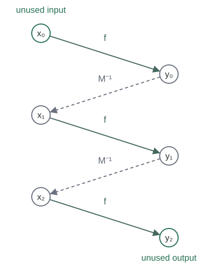

A computable permutation is a total computable bijection \(h:\mathbb N\to\mathbb N\). Sets \(A,B\subseteq\mathbb N\) are computably isomorphic if some computable permutation satisfies
A one-one reduction need only be an injection; its range may omit inputs. An isomorphism must also reach every input on the other side. The sets themselves need not be decidable.
If \(h:\mathbb N\to\mathbb N\) is a computable permutation, its inverse is the total computable function
On input \(y\), compute \(h(0),h(1),\ldots\) in order until a value equals \(y\), and return its input. Every test terminates because \(h\) is total. Surjectivity ensures that a successful test exists, so search over this total computable test terminates. Injectivity makes the returned input unique and gives both inverse identities.
A finite partial matching \(M\) is a finite list of pairs \((x,y)\in\mathbb N^2\) with no repeated first coordinate and no repeated second coordinate. Write \(|M|\) for its length, \(\operatorname{dom}M\) for its first coordinates, and \(\operatorname{ran}M\) for its second coordinates. If \((x,y)\) occurs, write \(M(x)=y\) and \(M^{-1}(y)=x\). These values are unique on the indicated domain and range.
The transpose \(M^{\mathsf t}\) swaps the coordinates of every pair, keeping their list order. It is again a matching, and transposing twice returns \(M\). A matching extension retains every old pair; the constructions below append one new pair to the list.
Put \(a(M)=\min(\mathbb N\setminus\operatorname{dom}M)\), the least unused input. This number is at most \(|M|\): a list of length \(|M|\) cannot contain all \(|M|+1\) distinct inputs from zero through \(|M|\). Define the least unused output by \(b(M)=a(M^{\mathsf t})\). Finite scans find these numbers and all defined lookups. The existing sequence coding represents the finite lists numerically.
Let \(f:\mathbb N\to\mathbb N\) be an injection and let \(x\notin\operatorname{dom}M\). The extension walk starts at \(x_0=x\). At position \(i\), compute \(y_i=f(x_i)\). If \(y_i\notin\operatorname{ran}M\), stop. Otherwise put \(x_{i+1}=M^{-1}(y_i)\) and continue. Only the numerical matching is searched; deciding whether an input belongs to either set is unnecessary.
For a total recurrence, let \(q_M(y)\) be the first coordinate of the pair ending at \(y\), with default zero if no such pair exists. Define
The stopping test is still \(f(x_i)\notin\operatorname{ran}M\). Before it succeeds, the lookup is defined and its default is never used. Values of this recurrence after the first stopping position play no role.

For a matching \(M\), an injective \(f\), and \(x\notin\operatorname{dom}M\), the extension walk reaches an unused output at some position \(n\le |M|\).
As long as the walk continues, every \(x_j\) with \(j>0\) lies in \(\operatorname{dom}M\), so it differs from \(x_0\). No other repetition is possible either. If \(x_i=x_j\) with \(0<i<j\), applying \(M\) gives \(f(x_{i-1})=f(x_{j-1})\). Injectivity of \(f\) gives \(x_{i-1}=x_{j-1}\). Repeating this argument would give \(x_0=x_{j-i}\), contradicting the first observation.
If none of the positions zero through \(|M|\) stopped, the \(|M|+1\) distinct points \(x_1,\ldots,x_{|M|+1}\) would all belong to the domain of a matching with only \(|M|\) pairs. This is impossible. Thus a stopping position exists within the stated finite bound.
Under the hypotheses of , let \(n\) be the least position at most \(|M|\) with \(f(x_n)\notin\operatorname{ran}M\). The forward extension is the specified list
where \(+\!+\) means list concatenation. The finite minimum exists by the preceding lemma. The procedure computes the walk for at most \(|M|+1\) positions and uses bounded tests on the finite graph; it does not search an infinite range for an unproved eventual escape.
For a finite partial matching \(M\), an injection \(f\), and \(x\notin\operatorname{dom}M\), the list \(E_f(M,x)\) is a matching extension of \(M\), has length \(|M|+1\), and contains the new input \(x\). Its range adds exactly one previously unused output.
The appended pair has first coordinate \(x\), which was absent from the old domain. Its second coordinate \(f(x_n)\) was absent from the old range by the stopping condition. Thus it conflicts with no old pair in either coordinate. Every old pair remains, and exactly one pair has been appended, proving all the assertions.
Let \(M\) be a finite partial matching, let \(f\) be an injection, and let \(x\notin\operatorname{dom}M\), as in . Let \(L\) be any set of labels and let \(\ell_X,\ell_Y:\mathbb N\to L\) be any functions. A matching respects these labels when \(\ell_X(u)=\ell_Y(v)\) for every pair \((u,v)\) it contains. Suppose \(M\) respects the labels and
Then \(E_f(M,x)\) respects the labels too. No computability or numerical coding of \(L\), \(\ell_X\), or \(\ell_Y\) is assumed.
At every continuing step, \(M(x_{i+1})=f(x_i)\). The old matching invariant and the hypothesis on \(f\) therefore give
Induction along the finite walk gives \(\ell_X(x)=\ell_X(x_n)=\ell_Y(f(x_n))\). This is precisely the required equality for the appended pair. The old pairs already satisfy the invariant, so the extended matching respects all labels.
Fix injections \(f,g:\mathbb N\to\mathbb N\), directed from the left side to the right side and from the right side to the left side respectively. Define the left completion and right completion by
The right completion is the identical forward-extension algorithm with the two sides swapped. It appends a pair whose second coordinate was the least unused output of \(M\). The alternating matching sequence is
The sequence is determined by \(f,g\). It contains no membership tests for the sets eventually related, and it does not inspect any labels.
Every \(M_s\) is a matching of length \(s\), and every later matching retains all its pairs. Moreover, for every \(n\),
The empty list is a matching. Applying at an even stage adds exactly one pair. At an odd stage apply that lemma to the transposed matching, then transpose back. This proves by induction that every stage is a matching, its length is its stage number, and each step preserves every old pair. Repeated preservation proves the assertion for arbitrary later stages.
For the displayed bound, use induction on \(n\). The case zero is empty. Assume that \(M_{2n}\) covers every input and output below \(n\). If input \(n\) is not already matched, it is the least unused input, so the even step puts it into the domain of \(M_{2n+1}\). If it was already matched, it remains. Thus that domain contains every input through \(n\).
The odd step preserves this domain and addresses the least unused output. If output \(n\) is still absent, all smaller outputs are present, so it is selected at this step. Hence \(M_{2n+2}\) covers every input and output through \(n\), completing the induction.
The forward map and reverse map produced by \(f,g\) are
Both indicated lookups are defined by . They read a fixed stage determined by their input, rather than an unspecified limiting matching. Later stages retain the same pair, so these values also agree with the union of the finite graphs.
The specified maps satisfy \(k(h(x))=x\) and \(h(k(y))=y\) for all natural numbers \(x,y\). In particular, \(h\) is a bijection and \(k=h^{-1}\).
Put \(y=h(x)\). The pair \((x,y)\) occurs in \(M_{2(x+1)}\). The pair \((k(y),y)\) occurs in \(M_{2(y+1)}\). Take a stage at least both these stage numbers. It contains both pairs and has no repeated second coordinate. Therefore \(k(y)=x\), proving \(k(h(x))=x\).
In the other direction, the pairs \((k(y),y)\) and \((k(y),h(k(y)))\) both occur in a common later matching. Uniqueness of the first coordinate gives \(h(k(y))=y\). These identities imply injectivity and surjectivity of \(h\), and identify the reverse map with its inverse.
If \(f,g\) are total computable injections, the specified stage sequence and both maps \(h,k\) are computable. The computations use only programs for \(f\) and \(g\), ordinary finite-list operations, and finite iteration.
For a coded finite matching, membership in its domain or range and coordinate lookup are finite scans. The least unused coordinate can be found among zero through the list length. An extension computes at most \(|M|+1\) walk positions and scans that same finite range for its first stopping position. Each call to \(f\) or \(g\) terminates. The escape lemma guarantees that a stopping position is found on every matching reached by the construction.
Starting with the empty list, a prescribed number of these finite operations computes \(M_s\). The partial-recursion closure rules build the required iterations from the given total recursive functions and finite-list operations, and the finite-chain criterion proves that each iteration is total. The stage bound \(2(x+1)\) or \(2(y+1)\) is computable. Computing that many stages and performing the final finite lookup therefore gives total computable \(h\) and \(k\), with the values defined in . This argument provides algorithms for those maps themselves.
Let \(f,g\) be total computable injections. Suppose arbitrary label maps \(\ell_X,\ell_Y:\mathbb N\to L\) satisfy
Then the specified \(h,k\) are total computable numerical inverses and satisfy
The empty matching respects all labels. At an even step apply using the first displayed hypothesis. At an odd step swap the two label maps and use the second hypothesis on the transposed matching. Induction shows that every \(M_s\) respects the labels.
The pair \((x,h(x))\) belongs to its specified finite stage, so it has equal labels. Computability and both inverse identities were proved for this very construction. No step asks for a label value or tests equality in \(L\); these equalities are invariants of the proof, rather than operations of the algorithm.
For all sets \(A,B\subseteq\mathbb N\),
Suppose \(f\) witnesses \(A\le_1B\) and \(g\) witnesses \(B\le_1A\). Use the label maps \(\ell_X(x)=\chi_A(x)\) and \(\ell_Y(y)=\chi_B(y)\). Membership preservation gives both label hypotheses in , even when neither characteristic function is computable. The resulting computable permutation satisfies \(x\in A\Longleftrightarrow h(x)\in B\).
Conversely, a computable isomorphism \(h\) is itself an injective reduction from \(A\) to \(B\). Its inverse is computable by , is injective, and satisfies \(y\in B\Longleftrightarrow h^{-1}(y)\in A\). Thus both one-one reductions exist. This proves Myhill’s theorem by an effective construction, with no decidability assumption on the sets.
If \(A\) and \(B\) are computably isomorphic, must they be decidable? Give a counterexample using a set already known to be undecidable.
No. Take both sets to be the diagonal halting set \(K\). The identity permutation is computable and preserves membership in \(K\), so it is a computable isomorphism of \(K\) with itself. But \(K\) is undecidable. Computing a new name for an input does not compute its membership answer.
Can \(A\equiv_1B\) be replaced by \(A\equiv_mB\) in Myhill’s theorem?
No. The sets \(A=\{0,1\}\), \(B=\{0\}\) are many-one equivalent. A bijection carrying \(A\) to \(B\) would send both zero and one to the sole member zero of \(B\), contradicting injectivity. The finite chain argument specifically needs injectivity of the supplied reductions when it rules out repeated walk vertices.